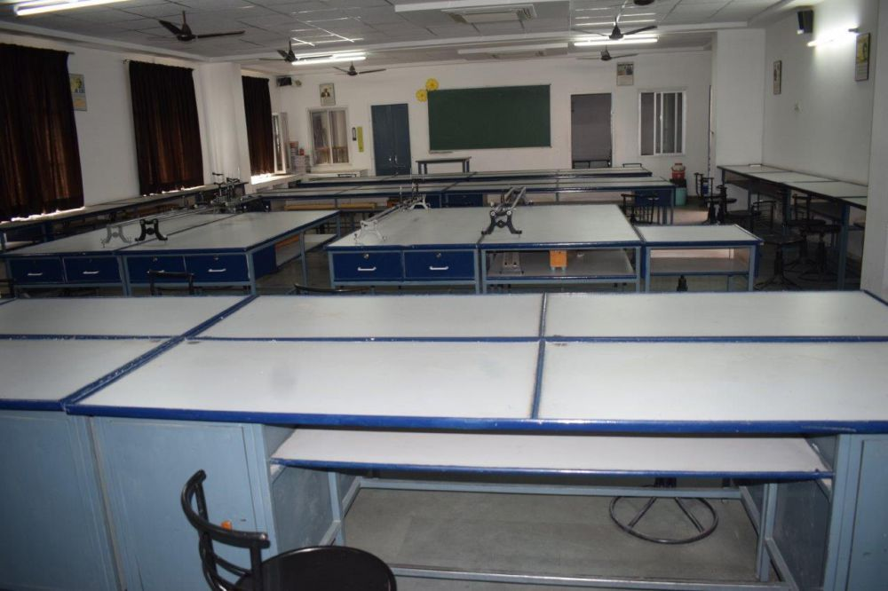

Experiments
- Experiment 1
To determine resistivity of two / three wires by plotting a graph for potential difference versus current.
- Experiment 2
To determine resistance of a galvanometer by half-deflection method and to find its figure of merit.
- Experiment 3
To assemble a household circuit comprising three bulbs, three (on/off) switches, a fuse and a power source.
- Experiment 4
To find the focal length of a convex lens by plotting graphs between u and v or between 1/u and 1/v.
- Experiment 5
To determine angle of minimum deviation for a given prism by plotting a graph between angle of incidence and angle of deviation.